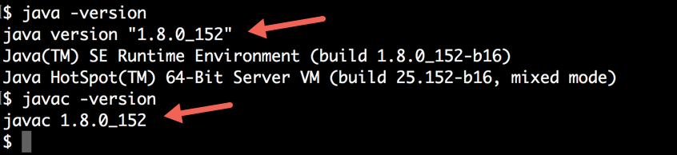
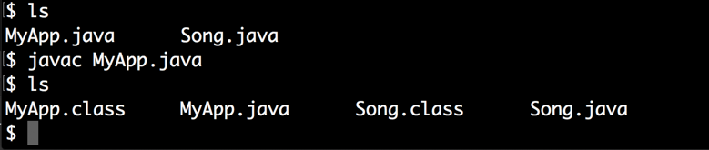
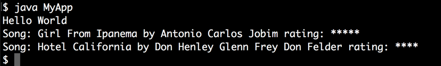
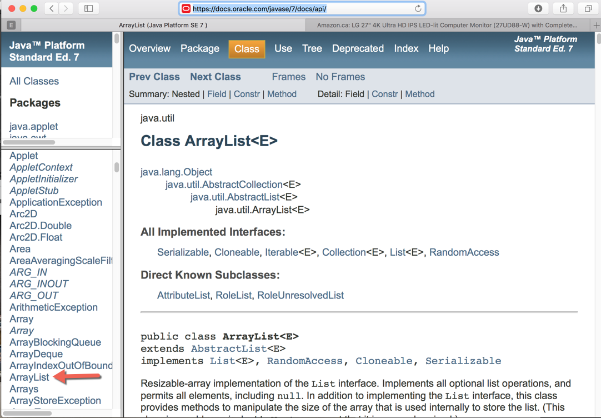
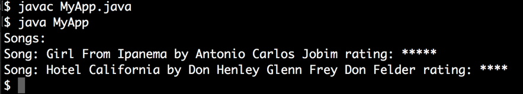
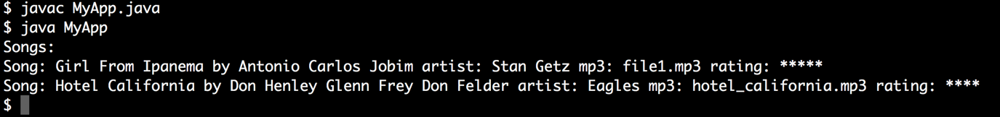

COMP 1601 Winter 2020
Tut04 -Java Objects, Classes and Inheritance
© L.D. Nel 2020
Revisions:
Description
The purpose of this exercise is to make sure you understand some important concepts about java objects, classes and inheritance. You will need to know these concepts very well to use java to build android apps.
We will build and run simple java programs outside the android environment. This will allow us to do simple java experiments when learning the java programming language and object-oriented programming.
You need to demonstrate your exercise to the TA or Prof. before you leave the class to get credit for it. If you complete, or make significant progress on the exercise you will get a mark of 2. If you make some progress you will get a mark of 1 and can "upgrade" that mark to a 2 by showing your completed work within one week of this exercise. 0 marks for a no-show or unsufficient progress.
Preliminary: A Simple Java Program
Create an empty folder somewhere on your machine and open a terminal window at that location. Verify the versions of java and javac by executing java -version and javac -version:

If you do not have a javac compiler or a java runtime version then first follow the instructions in notes 03 Installing Java JDK. You can use any version of java JDK 8 or higher (You might have a later version installed from COMP 1006/1406 which will be fine.)
From this point we will assume you have a java JDK installed.
Create two files MyApp.java and Song.java by executing touch MyApp.java and touch Song.java (touch is a linux terminal command that changes the timestamp of a file and also creates the file if it does not already exist). List the files in the directory (folder) by executing ls.
Open MyApp.java with your favourite text editor (TextEdit on the Mac is fine) and type the following code. (You should actually type it rather than cut and paste as you will learn more about java that way.)
class MyApp {
public static void main(String[] args){
System.out.println("Hello World");
Song song = new Song("Girl From Ipanema", "***");
System.out.println("Song: " + song.getTitle() + " rating: " + song.getRating());
song.setRating("*****");
System.out.println("Song: " + song.getTitle() + " rating: " + song.getRating());
}
}
Add the following code to Song.java:
public class Song{
//represents a song
private String title; //title of the song
private String rating; //"*" ... "*****"
//constructor
public Song(String aSongTitle, String aRating){
title = aSongTitle;
rating = aRating;
}
//get and set methods
public String getTitle(){return title;}
public String getRating(){return rating;}
public void setRating(String aRating){
rating = aRating;
}
}
To compile the code execute javac MyApp.java. You might get errors which you should try to debug and fix. Keep fixing and compiling until you have a "clean compile". At this stage two more files will have been created: MyApp.class and Song.class. These are the compiled versions of the source code you wrote.

To run the program execute java MyApp
Problem1: Object Attributes
Modify the Song class to add a String composer property and make whatever other changes are required in the Song class to support this.
Modify the main method in MyApp to create two songs and then print them as follows.
public class MyApp {
public static void main(String[] args){
System.out.println("Hello World");
Song song1 = new Song("Girl From Ipanema", "Antonio Carlos Jobim", "*****");
Song song2 = new Song("Hotel California", "Don Henley Glenn Frey Don Felder", "****");
System.out.println("Song: " + song1.getTitle() + " by " + song1.getComposer() + " rating: " + song1.getRating());
System.out.println("Song: " + song2.getTitle() + " by " + song2.getComposer() + " rating: " + song2.getRating());
}
}
Run the app; the output should look like the the following:

Problem 2: Ask Not What I Can Do For This Object...
Notice in the previous main program it has to figure out how to print the details of a song and then do that for each song. It is generally preferred in object-oriented programing to have objects do things for themselves.
Modify the code so that the main method can simply ask each object to print itself. This will require you to add a public void print() method to the Song class.
The main routine should now looks as follows and the output should be as before.
public class MyApp {
public static void main(String[] args){
System.out.println("Hello World");
Song song1 = new Song("Girl From Ipanema", "Antonio Carlos Jobim", "*****");
Song song2 = new Song("Hotel California", "Don Henley Glenn Frey Don Felder", "****");
song1.print();
song2.print();
}
}
Problem 3: Collection of Songs
Modify the main method so that instead of having individual song variables it maintains an ArrayList<Song> songs collection. To learn about java's ArrayList<> class look at the JavaAPI documentation at https://docs.oracle.com/javase/7/docs/api/

import java.util.ArrayList;
public class MyApp {
public static void main(String[] args){
ArrayList<Song> songs = new ArrayList<Song>();
songs.add(new Song("Girl From Ipanema", "Antonio Carlos Jobim", "*****"));
songs.add(new Song("Hotel California", "Don Henley Glenn Frey Don Felder", "****"));
System.out.println("Songs:");
for(Song s : songs) {
s.print();
}
}
}
Notice the following:
1) There is now an import statement in MyApp.java to make the ArrayList class available. How did I know from the documentation what to import?
2) Notice the "for-each" loop that iterates over the ArrayList container.
The output should now look like this:

Problem 4: Inheritance -A Song Subclass
Now imagine that a RecordedSong is like a Song but it has been recorded by an artist (performer) and the audio represented by a particular .mp3 file. Create a new file RecordedSong.java which defines a class RecordedSong that inherits from (or extends) Song.
Also we want to associate the rating with the RecordedSong not the Song it inherits from. Remove the rating attribute from Song and move it to RecordedSong.
The RecordedSong class should look something like the following (make the required changes in the superclass Song to make this work): Notice we are now using System.out.print() instead of System.out.println() so we can control when the next line starts.
public class RecordedSong extends Song{
//represents a song
private String artist; //performer
private String mp3Filename;
private String rating; //"*" ... "*****"
//constructor
public RecordedSong(String aSongTitle, String aComposer, String anArtist, String anMp3Filename, String aRating){
super(aSongTitle, aComposer);
artist = anArtist;
mp3Filename = anMp3Filename;
rating = aRating;
}
//get and set methods
public String getArtist(){return artist;}
public String getMP3Filename(){return mp3Filename;}
public String getRating(){return rating;}
public void setRating(String aRating){
rating = aRating;
}
public void print(){
super.print();
System.out.print(" artist: " + artist + " mp3: " + mp3Filename + " rating: " + rating);
System.out.println("");
}
}
The main routine should now look as follows:
import java.util.ArrayList;
public class MyApp {
public static void main(String[] args){
ArrayList<RecordedSong> songs = new ArrayList<RecordedSong>();
songs.add(new RecordedSong("Girl From Ipanema", "Antonio Carlos Jobim", "Stan Getz", "file1.mp3", "*****"));
songs.add(new RecordedSong("Hotel California", "Don Henley Glenn Frey Don Felder", "Eagles", "hotel_california.mp3", "****"));
System.out.println("Songs:");
for(Song s : songs) {
s.print();
}
}
}
When you've got the code sorted out the output should look like the following:

Problem 5: Superclass Variables Refering To Subclass Objects
Change the statement in the MyApp.java:
ArrayList<RecordedSong> songs = new ArrayList<RecordedSong>();
to the following instead:
ArrayList<Song> songs = new ArrayList<Song>();
but leave the other statements the same. Compile an run the program and verify that it still behaves the same. The effect is that you have declared a collection of Song objects but you have put RecordedSong instances into that collection. Why is that OK?
This is a very common programming pattern in object-oriented programming. That is, putting subclass objects into a container that is declared to hold superclass objects. This pattern is used a lot in android applications. Why do you think it is desirable?
In doing these problems it's very important that you understand the java that has been used and the consequences of using inheritance. Ask lots of questions about this. Almost all java application classes that you will build in Android will involve inheritance. You will not get far if these concepts are not clear to you.
When you have completed these problems demonstrate your code to the TA or Prof. to get credit for the tutorial.